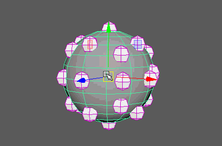

逐点偏移 MASH 网络的点。
质量
-
模式(Mode)
-
指定如何应用偏移。选项包括：
- “偏移”(Offset)：添加到输入数组的“偏移”(Offsets)。
- “相乘”(Multiply)：乘以输入数组的“偏移”(Offsets)。
- “覆盖”(Overwrite)：值将设置为这些值（无论传入的值如何）。
- “网格上的最近点”(Closest Point On Mesh)：点将偏移到指定网格上的最近点。
- “乘以时间”(Multiply by Time)：将偏移值乘以帧数，并将结果添加到输入数组中。
-
变换空间(Transformation Space)
-
确定是相对于点的共享“世界”(World)空间还是其各自的“局部”(Local)空间变换点。
-
“启用位置”(Enable Position)、“启用旋转”(Enable Rotation)、“启用缩放”(Enable Scale)、“启用 ID”(Enable Id)
-
确定受偏移操作影响的变换。
-
“偏移位置”(Offset Position)、“偏移旋转”(Offset Rotation)、“偏移比例”(Offset Scale)
-
设置要应用于每种变换的偏移值。
钳制(Clamps)（仅限法线模式）
定义节点输出的上限和下限。低于或高于这些值的所有值均返回相应的钳制值。
-
低钳制(Low Clamp)
- 定义钳制的下限。
-
高钳制(High Clamp)
- 定义钳制的上限。
“乘以时间”(Multiply By Time)
以下选项仅当“模式”(Mode)设置为“乘以时间”(Multiply by Time)时有效。
-
开始帧(Start frame)
- 偏移“乘以时间”(Multiply by Time)操作的开始帧。
网格上的最近点(Closest point on Mesh)
以下选项仅当“模式”(Mode)设置为“网格上的最近点”(Closest point on Mesh)时有效。

-
输入网格(Input Mesh)
- 显示用作输入的当前网格。可以通过以下任一方式指定当前选定的对象：按住鼠标中键将其拖动到此字段；或者通过在该字段上单击鼠标右键并单击“连接”(Connect)。
-
最近点模式(Closest Point Mode)
-
“网格上的最近点”(Closest Point on Mesh)会将网络中的所有点移动到“输入网格”(Input Mesh)上的最近点。“光线投射”(Ray Cast)将从“光线方向”(Ray Direction)中的每个点射出一条光线，然后将该点移动到与其相交的“输入网格”(Input Mesh)上的斑点（如果存在）。
-
光线方向(Ray Direction)
-
“最近点模式”(Closest Point Mode)设置为“光线投射”(Ray Cast)。
-
缺少光线时隐藏(Hide on Ray Miss)
- 隐藏其光线缺少“输入网格”(Input Mesh)的点。用于禁用使网格衰减的对象。
重新排序点(Reorder Points)
-
模式(Mode)
- 用于根据许多不同的条件对点重新排序。这些按钮包括：
- X：沿 X 轴从负到正对点重新排序。
- Y：沿 Y 轴从负到正对点重新排序。
- Z：沿 Z 轴从负到正对点重新排序。
- “到点的距离”(Distance to Point)：根据点到通过“距离点”(Distance Point)所指定点的距离对其进行重新排序。
- “到网格的距离”(Distance to Mesh)：根据点到通过“距离点”(Distance Point)所指定网格的距离对其进行重新排序。
- “到点的距离”(Distance to Point)：根据点到通过“距离点”(Distance Point)所指定点的距离对其进行重新排序。
- “随机”(Random)：对点随机重新排序。
-
反向(Reverse)
- 反转当前点顺序。
-
随机种子(Random Seed)
- “模式”(Mode)设置为“随机”(Random)时，会更改随机化。
-
距离点(Distance Point)
- “模式”(Mode)设置为“到点的距离”(Distance to Point)时，设置相对点。
-
距离网格(Distance Mesh)
- “模式”(Mode)设置为“到网格的距离”(Distance to Mesh)时，设置相对网格。
强度(Strength)
-
强度(Strength)
- 同时减弱对所有对象的节点效果。
-
随机强度(Random Strength)
- 按随机顺序平滑地减弱所有对象的节点效果。
-
步骤强度(Step Strength)
- 每次禁用一个对象的节点效果。
-
“过滤器启用”(Filter On)、“过滤器禁”用(Filter Off)
- 允许自定义哪些实例始终/从不受此节点影响。
-
强度贴图(Strength Map)
- 确定输入文件（2D 纹理、动画纹理等）来控制该节点的效果的形状。
-
贴图投影轴(Map Projection Axis)
- 确定投影“强度贴图”(Strength Map)时所沿的轴。
-
贴图辅助对象(Map Helper)
- 显示用于在场景中交互放置“强度贴图”(Strength Map)的对象。可以在该字段上单击鼠标右键来创建新的辅助对象（平面）（如果不存在）。还可以使用鼠标中键将网格拖入此字段，或者单击鼠标右键连接选定网格。如果网格已连接，还可以单击鼠标右键来断开其连接或者将其显示在大纲视图中。
注： 为获得最佳结果，请将相同的纹理指定给“强度贴图”(Strength Map)和“贴图辅助对象”(Map Helper)（在创建新的辅助对象时将自动执行此操作）。
每点调整(Per Point Adjustments)
-
贴图调整偏移(Map adjusts Offsets)
- 设置“强度贴图”(Strength Map)以影响“偏移”(Offsets)值，而不是“强度”(Strength)值。